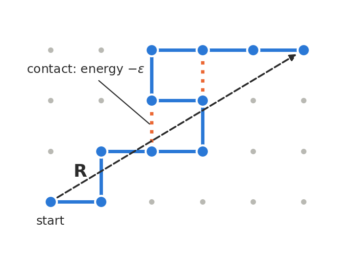

PHYSM0071: Coursework 2
Self-avoiding walks: a polymer in good and poor solvents
1. Aim
Use a lattice model of a single polymer chain to explore how excluded volume and monomer attraction set the size of the chain. You will compare two sampling algorithms, which you assemble from ready-made blocks in a web page, and use them to measure the scaling exponent \(\nu\) in two dimensions, comparing with a simple Flory prediction. The assessment focuses on the physics, not on programming.
2. Physical background
2.1 The model
A polymer of \(N\) bonds is represented by a walk of \(N\) unit steps on the square lattice, starting at the origin. Each of the \(N+1\) sites of the walk is a monomer. In a self-avoiding walk (SAW) no site may be visited twice; this is the lattice version of the excluded volume discussed in the lectures.
The size of the chain is measured by the mean squared end-to-end distance \(\langle R^2\rangle\), where \(R\) is the distance between the first and last sites. For long chains
\[ \langle R^2\rangle \sim N^{2\nu}, \]
where \(\nu\) is a universal exponent. For a random walk, i.e. an ideal chain, \(\langle R^2\rangle = N\) exactly (unit step length) and \(\nu=1/2\).
To include solvent quality, two monomers that are nearest neighbours on the lattice but not bonded along the chain form a contact. Each contact lowers the energy by \(\varepsilon>0\), so a walk with \(m\) contacts has energy
\[ E=-\varepsilon m \]
and Boltzmann weight \(e^{\beta\varepsilon m}=\omega^m\), with \(\omega=e^{\beta\varepsilon}\). This is the interacting self-avoiding walk. The single control parameter is \(\beta\varepsilon=\varepsilon/k_{\mathrm{B}}T\):
- small \(\beta\varepsilon\) (high \(T\)): excluded volume dominates and the chain swells (good solvent);
- large \(\beta\varepsilon\) (low \(T\)): attraction dominates and the chain collapses into a compact globule (poor solvent), with \(\nu=1/d\) (see the problem sheet);
- in between lies the \(\theta\)-point. For this model on the square lattice it is at \(\beta\varepsilon_\theta\simeq0.66\).

Notation and dimension. Here \(\varepsilon>0\) is the energy gained per contact between non-bonded neighbouring monomers, as for the lattice gas of Coursework 1; in the lecture notes this attraction is \(\Delta\varepsilon\). The excluded-volume parameter \(v\) and three-body coefficient \(w\) of Section 3.3 are those of the notes and the problem class. The notes treat chains in \(d=3\); part of this coursework is finding out what changes in \(d=2\).
2.2 The SAW algorithm builder
All computational work uses the SAW algorithm builder, a web page that runs in any recent browser with nothing to install:
https://fturci.github.io/course-disordered-matter-slides/coursework2/saw_builder.html
- Build. Each tab builds one algorithm by dragging blocks (e.g. propose a step in a random direction, pick a random pivot site) into the purple starting block. Not every block is needed.
- Guided steps. Small stages with optional hints. The ticks and questions there are only for your own guidance: only the labelled tasks in Section 3 are assessed.
- Step / Play animate your algorithm on the lattice; Check my algorithm compares it with exact or reference results.
- Measure runs it many times and gives a table (CSV) and a plot. The pivot tab’s N values field takes a list (e.g.
30, 60, 120), and each run adds rows to the table. Download figure (PNG) saves the plot (\(\ln\langle R^2\rangle\) against \(\ln N\), or local exponents, with optional error bars and reference values) and the \(R^2\) time-evolution of a single run: no plotting code is needed. You can also simply download the CSV table and replot as you like. - Save my work / Load saved work store and restore your algorithms, tables and settings as a file. These buttons and Check my algorithm appear at both the top and the bottom of the page.
Seeds. Use your seven-digit student number in the seed field of every run, so that your results are reproducible and your own.
2.3 Uncertainties
Direct sampling produces independent walks, so the standard error of the mean is the usual \(s/\sqrt{n}\).
The pivot algorithm is a Markov chain in the space of walks: successive samples are correlated, and the naive standard error underestimates the uncertainty. The Measure panel therefore also reports a block-averaged error: the recorded values are divided into consecutive blocks, and the standard error is computed from the block means. Blocks must be much longer than the time the chain takes to forget its state. A simple check is to make the blocks longer (use fewer blocks): the block error grows at first and stops changing once the blocks are long enough.
3. Tasks
The following tasks mix some brief theoretical calculations and numerical experiments. Report your results in a concise pdf, organised in Task 1, Task2, Task 3 etc.
3.1 Direct sampling [10 marks]
Non-reversing walks. A walk that steps straight back lands on the site it has just left. A non-reversing walk forbids this: the first step has 4 choices and every later step has 3. Every self-avoiding walk is also non-reversing, but not the other way round.
Direct sampling. To generate self-avoiding walks, grow a non-reversing walk step by step, choosing each step at random among the allowed directions. If a step lands on a site already visited, discard the walk and start again; otherwise, after \(N\) steps keep it. The fraction kept is the number of walks kept divided by the number of attempts.
Task 1 [3 marks]. How many \(N\)-step non-reversing walks are there? Since each step is chosen at random among the allowed directions, every one of them is generated with the same probability: what is it? Explain why the self-avoiding walks that are kept are therefore all equally likely.
Task 2 [3 marks]. Correct your count for self-intersections at \(N=4\): sketch the 4-step non-reversing walks that are not self-avoiding (taking the first step to the right), and hence find the number \(c_4\) of 4-step self-avoiding walks and the fraction kept at \(N=4\).
Hint. Fix the first step and describe the rest as straight, left or right. A clear scan of handwritten working is acceptable.
Task 3 [4 marks]. Build the direct-sampling algorithm in the first tab of the builder and include a screenshot. The Measure panel reports the fraction kept for each \(N\).
- (a) Measure the fraction kept for \(N=1,\dots,30\), and check your value at \(N=4\) against Task 2.
- (b) The fraction kept equals \(c_N/(4\cdot3^{N-1})\). The number of self-avoiding walks grows roughly as \(c_N\propto\mu^N\) for large \(N\), with \(\mu\simeq2.638\). Explain why \(\ln(\text{fraction kept})\) should then decrease linearly with \(N\), and compare its slope with your data.
- (c) Use this slope to estimate how many attempts would be needed to keep 1000 walks with \(N=200\).
3.2 The pivot algorithm [10 marks]
Your answer to Task 3 should show that direct sampling cannot reach long chains: almost every attempt is discarded. The pivot algorithm avoids this by never starting from scratch. It is a Markov chain that changes an existing self-avoiding walk by rotating or reflecting the part beyond a randomly chosen site, so each accepted move changes the overall shape of the chain substantially. A trial walk that overlaps itself is rejected; otherwise it is accepted with the Metropolis probability. The price is that successive walks are correlated, so the chain must be equilibrated and the errors estimated by blocking (Section 2.3).
Task 4 [5 marks]. Build the pivot algorithm in the second tab (include a screenshot), and cite the original paper that introduced it. In a few sentences, justify what is recorded at a step where the move is rejected, and the form of the acceptance probability, starting from \(E=-\varepsilon m\).
Task 5 [5 marks]. At \(N=20\) and \(\beta\varepsilon=0\), measure \(\langle R^2\rangle\) with both algorithms. Do they agree within errors? For the pivot algorithm, compare the naive and block errors and explain why they differ. Which algorithm would you use at \(N=200\), and why?
See the lecture notes on the Ising model for Metropolis Monte Carlo and on the master equation for detailed balance.
3.3 Good solvent, \(\theta\)-point and globule [14 marks]
Before measuring \(\nu\), predict it. The lecture notes estimate the free energy of a coil of size \(R\) as an elastic (entropic) term plus a virial expansion of the monomer interactions, in \(d=3\) (notes, excluded volume). In \(d=2\) the coil occupies an area \(\sim R^2\) instead of a volume \(\sim R^3\), and the same argument gives
\[ \frac{F}{k_{\mathrm{B}}T}\simeq\frac{R^2}{Nb^2}+v\frac{N^2}{R^2}+w\frac{N^3}{R^4}, \]
where \(v\) is the excluded-volume parameter (second virial coefficient) and \(w>0\) the three-body coefficient, as in the lecture notes and the problem class. Increasing \(\beta\varepsilon\) lowers \(v\), which vanishes at the \(\theta\)-point.
Task 6 [4 marks]. Show that the Flory argument gives \(\nu=3/4\) in a good solvent (\(v>0\), two-body term) and \(\nu=2/3\) at the \(\theta\)-point (\(v=0\), three-body term).
Hint. In each case keep the elastic term and one interaction term: the two-body term in a good solvent, the three-body term at the \(\theta\)-point, where the two-body term vanishes. Then \(F = aR^2 + c\,R^{-k}\), and \(dF/dR=0\) gives \(2aR = kc\,R^{-k-1}\), i.e. \(R^{k+2}\propto c/a\). Only the dependence on \(N\) matters: substitute \(a\propto 1/N\) and \(c\propto N^2\) or \(N^3\), and read off \(\nu\) from \(R\propto N^{\nu}\).
Task 7 [7 marks]. Flory theory is a mean-field approximation: exact two-dimensional theories give \(\nu=3/4\) in a good solvent, as Flory, but \(\nu_\theta=4/7\) at the \(\theta\)-point, where Flory gives \(2/3\). Using the pivot algorithm, measure \(\langle R^2\rangle\) for chain lengths of your choice (at least four) up to \(N=200\), at \(\beta\varepsilon=0\) (good solvent) and at \(\beta\varepsilon=0.66\) (close to the \(\theta\)-point). Justify your choice of chain lengths and run lengths, including one \(R^2\) time-evolution that supports your equilibration length. Estimate \(\nu_{\mathrm{eff}}\) with an uncertainty at each, and show your results in two figures: \(\ln\langle R^2\rangle\) against \(\ln N\) with error bars, and the local exponents against \(N\) with the exact and Flory values as horizontal lines. At the \(\theta\)-point, do your data distinguish the exact value from the Flory one?
Task 8 [3 marks]. Set \(\beta\varepsilon=1.5\) (deep in the poor-solvent regime) and explore how the behaviour changes as you increase \(N\). Using the animation, the acceptance rate and the \(R^2\) time-evolution, describe what happens to the chain and to the algorithm, and identify roughly the chain length beyond which the results can no longer be trusted.
Run lengths. You choose the equilibration length, the number of measurement steps and the number of blocks. Useful evidence is the recorded \(R^2\) time-evolution and how the block error changes with the number of blocks. The page’s defaults (\(2\times10^4\) equilibration and \(10^5\) measurement steps, 20 blocks) are a reasonable first run; decide from your data whether they are enough. The page accepts \(N\le200\) and at most \(10^7\) steps per run; \(10^6\) steps at \(N=200\) take a few seconds.
Fitting hints. Fit a straight line to \(y_i=\ln\langle R^2\rangle_{N_i}\) against \(x_i=\ln N_i\), weighting each point by \(1/\sigma_{y_i}^2\), where \(\sigma_{y_i}=\sigma_i/\langle R^2\rangle_i\); then \(\nu_{\mathrm{eff}}\) is half the slope. A spreadsheet is sufficient. Also compute local exponents from pairs of chain lengths,
\[ \nu_{\mathrm{eff}}(N_1,N_2)=\frac{\ln\left(\langle R^2\rangle_{N_2}/\langle R^2\rangle_{N_1}\right)}{2\ln\left(N_2/N_1\right)}: \]
a systematic drift with \(N\) indicates corrections to scaling. A log–log plot looks straight for any of the candidate exponents, so judge the fit by its uncertainty and the local exponents, not by eye.
3.4 Summary [6 marks]
Task 9 [6 marks]. Summarise your findings in one table with a row for each regime (good solvent, \(\theta\)-point, globule) and columns for: the exact \(\nu\) in two dimensions, your measured \(\nu_{\mathrm{eff}}\) (where you have one), and how well the pivot algorithm performs there (acceptance rate, equilibration), with a brief reason. Add at most 150 words explaining, in terms of conformational entropy and contact energy, why \(\nu\) decreases as \(\beta\varepsilon\) increases.
4. Your report
- Produce a report of no more than 5 sides of A4, including figures, tables and screenshots, using at least 11-point font and normal margins. Focus on results and their physical interpretation. Marks will be deducted for exceeding the limit.
- Begin the first page with PHYSM0071: Coursework 2, followed by your full name and student number. A separate title page is not needed.
- Organise the report by task, with headings Task 1, Task 2, … for the tasks you attempted.
- List the references you cite at the end; the list does not count towards the page limit.
- Use labelled axes and informative captions, and include uncertainties.
- Include a short table of the production runs: \(N\), \(\beta\varepsilon\), equilibration and measurement steps, number of blocks and seed.
- Submit the report in PDF format via Blackboard, named
familyname_givenname_coursework2.pdf. - Also submit the file produced by Save my work, named
familyname_givenname_coursework2.json. It must contain the algorithms and measurements used in the report.
The report will be marked out of 40. The marking will focus on:
- whether the derivations and counts are correct and clearly presented;
- whether the algorithms are correct and the choices in them are justified;
- whether the results are physically plausible and given with justified uncertainties;
- whether the observations are explained correctly using appropriate concepts.
AI Use: The assessment is classified as Category 3 in the University’s AI use policy. This is selective use.
You can
- use AI tools to brainstorm your ideas
- use AI tools to explore the literature when appropriate
- use AI tools to polish grammar and spelling
You cannot
- use AI tools to perform the derivations or enumerations
- use AI tools to interpret your results
- use AI tools to generate your report